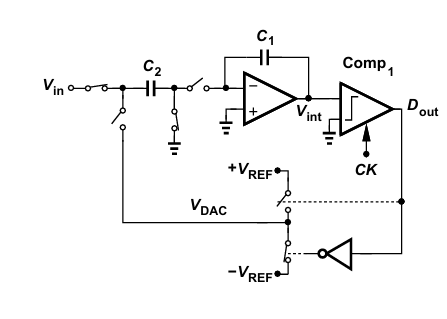
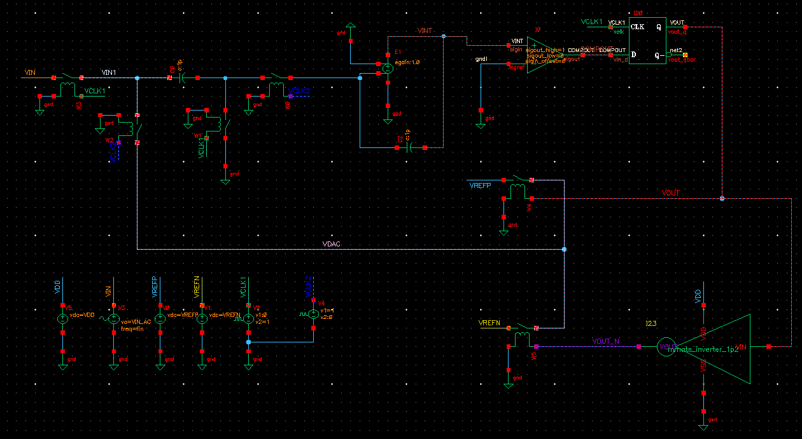
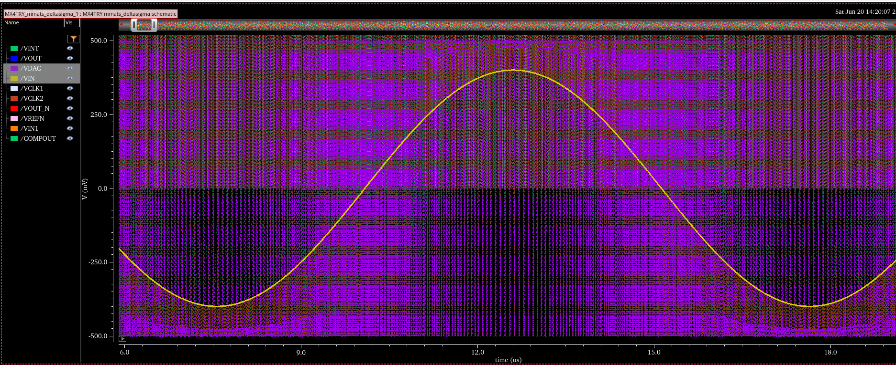
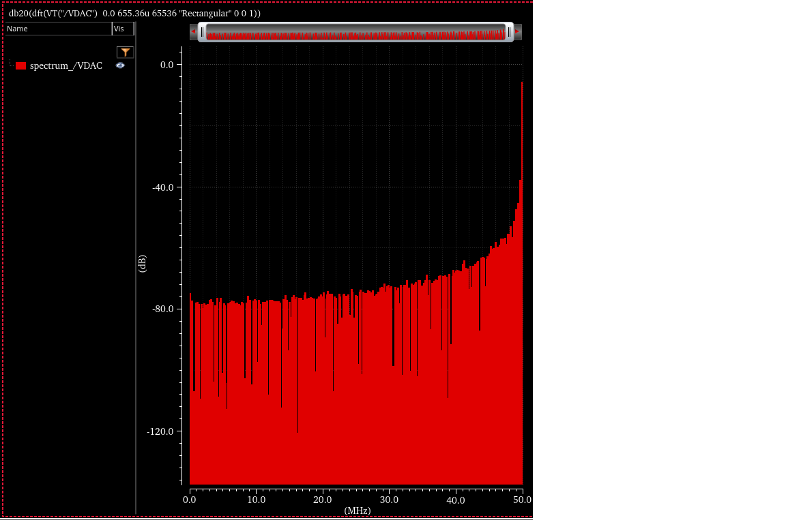

3章まで読んだが、イチから全部丸々読んでいたら日が暮れてしまうのでΔΣから学習。 分からないところがあれば都度戻るようにする。
教科書に掲載されている1次1bit ΔΣADC回路。

Cadence Virtuoso上で理想素子を用いて1次ΔΣADCを構成した。

| Parameter | Value |
|---|---|
| Input Frequency | 100 kHz |
| Input Amplitude | 0.4 V |
| Clock Frequency | 100 MHz |

入力信号に応じてパルス密度が変化していることを確認した。
入力電圧が高い領域ではHighが多くなり、入力電圧が低い領域ではLowが多くなる。
1bit ΔΣADCにおける典型的な粗密波が得られた。
入力信号を加えず、微小DCオフセットを与えた状態でFFTを実施した。
| Parameter | Value |
|---|---|
| FFT Points | 65536 |
| Sampling Clock | 100 MHz |
| Observation Time | 655.36 µs |

FFT/DFTの結果は目的に応じて様々な形で表現される。
| 名称 | 数式 | 単位 | 意味 | FFT点数依存 |
|---|---|---|---|---|
| DFT振幅スペクトル | $|X[k]|$ | DFT係数 | DFTで得られた複素係数の絶対値 | あり |
| 振幅スペクトル (Amplitude Spectrum) | $|X(f)|$ | V | 各周波数成分の振幅 | あり |
| パワースペクトル (Power Spectrum) | $|X(f)|^2$ | V² | 各周波数成分が持つパワー | あり |
| 振幅スペクトル密度 (ASD) | $\frac{|X(f)|}{\sqrt{\Delta f}}$ | V/√Hz | 1√Hzあたりの振幅 | なし |
| パワースペクトル密度 (PSD) | $\frac{|X(f)|^2}{\Delta f}$ | V²/Hz | 1Hzあたりのパワー | なし |
ここで、
$$\Delta f = \frac{f_s}{N}$$
である。
| 名称 | dB表記 |
|---|---|
| 振幅スペクトル | $20\log_{10}|X|$ |
| パワースペクトル | $10\log_{10}|X|^2$ |
| ASD | $20\log_{10}\left(\frac{|X|}{\sqrt{\Delta f}}\right)$ |
| PSD | $10\log_{10}\left(\frac{|X|^2}{\Delta f}\right)$ |
振幅スペクトルとパワースペクトルは
$$20\log_{10}|X| = 10\log_{10}|X|^2$$
となるため、dB表示では同じ値になる。
時間波形 x[n]
│
▼
DFT/FFT
│
▼
DFT振幅スペクトル
|X[k]|
│
├─ 振幅として見る
▼
振幅スペクトル
|X(f)|
│
├─ 二乗
▼
パワースペクトル
|X(f)|²
│
├─ 周波数分解能 Δf で割る
▼
PSD
|X(f)|² / Δf
│
└─ 平方根
▼
ASD
|X(f)| / √Δf